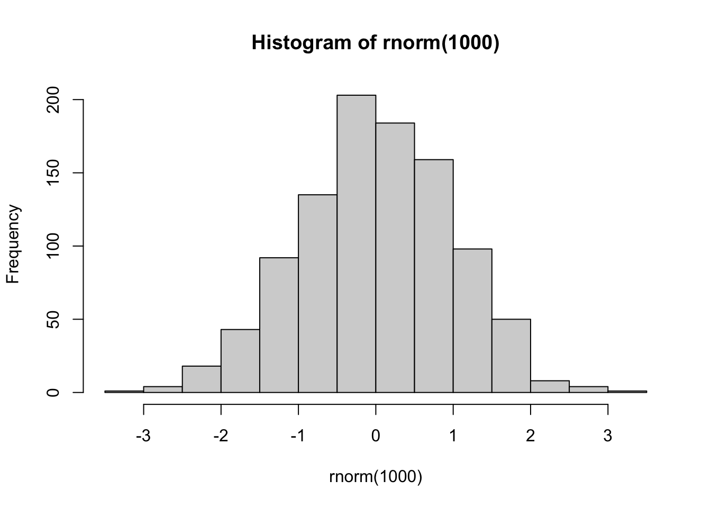

2 Additional notes / Rough working
EDM124
ITO
OV1114
2025-26
3 Testing ?
3.0.1 Quick Quiz
Which of these is used to join datasets in R?
- What is 1 and this
- Is this true? Answer:
- Is this true? Answer:
I am going to learn a lot:
What is a p-value?3.0.2 Fill-In-The-Blanks (fitb())
Create fill-in-the-blank questions using fitb(), providing the answer as the first argument.
- 2 + 2 is
Note
This is a note callout.
Warning
This is a warning callout
Important
This is an important callout
Caution
This is a caution callout
Tip
This is a tip callout.With a bit of code.